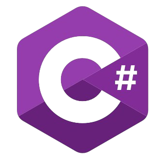
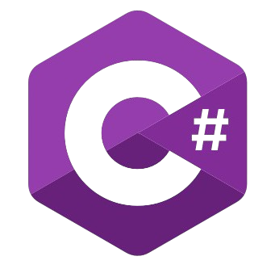
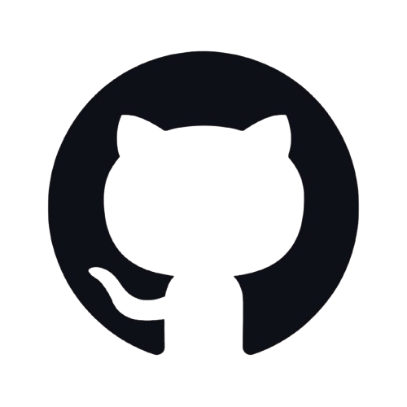
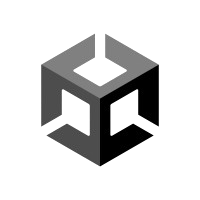
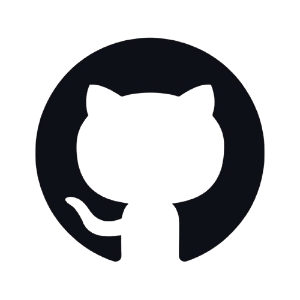
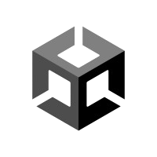

Ohjelmistokehittäjä
2023-2025
Opiskelin Vaasan Vamiassa ohjelmistokehittäjäksi ja valmistuin toukokuussa 2025. Koulutus tapahtui kokonaan etäopetuksena. Opintojen laajuus oli 180 opintopistettä.
Juuri valmistunut ohjelmistokehittäjä (toukokuu 2025), joka haluaa rakentaa pitkän uran IT-alalla. Minua erityisesti kiinnostaa Full stack developer-tehtävät. Osaamiseeni kuuluu mm. C#, MySQL, PowerShell, HTML, CSS, JavaScript, Git & GitHub. Osaan myös käyttää monipuolisesti tekoälyä (ChatGPT & CoPilot).


 


 



Terveppä terve. Oon Tonoppa.
Opiskelin Vaasan Vamiassa ohjelmistokehittäjäksi ja valmistuin toukokuussa 2025. Koulutus tapahtui kokonaan etäopetuksena. Opintojen laajuus oli 180 opintopistettä.
Toimin logistiikkatyöntekijänä PP-Logistiikka Oy:ssä kuusi vuotta. Työ sisälsi hyvin erilaisia työnkuvia, mutta projektilogistiikka-termi kiteyttää hyvin, millaista työtä tein.
Olin liikenneopettajana Forssan Autokoulu Oy:ssä viisi vuotta. Suoritin asiakkaille (oppilaille) ajokorttikoulutusta, jotka sisälsivät AM120-, AM121-, A- ja B-luokan ajokorttiluokat.
Tein Chatbotin, joka tuntee kaikki taitoni ja työkokemukseni. Botilta löytyy myös CV. Halutessasi voit esittää kysymyksiä chatbotille, jonka avulla saat paremman käsityksen kuka olen ja mitä olen tehnyt.
Voit ladata CV:n täältä, jos haluat tarkastella sitä tarkemmin. Etsin tällä hetkellä mahdollisuuksia hyödyntää ohjelmointitaitojani projekteissa, joten ota yhteyttä, jos Sinulla on tarjota mahdollisuus!
Lataa ansioluettelo